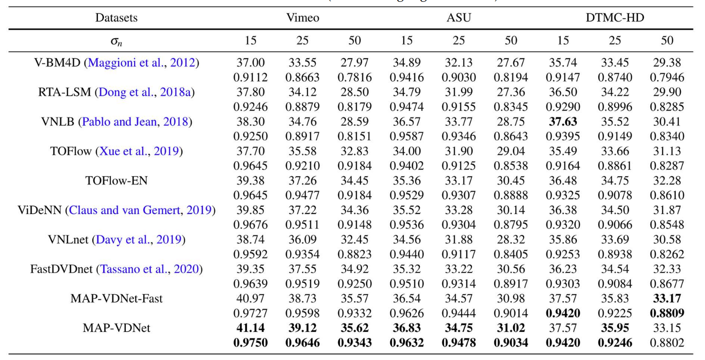
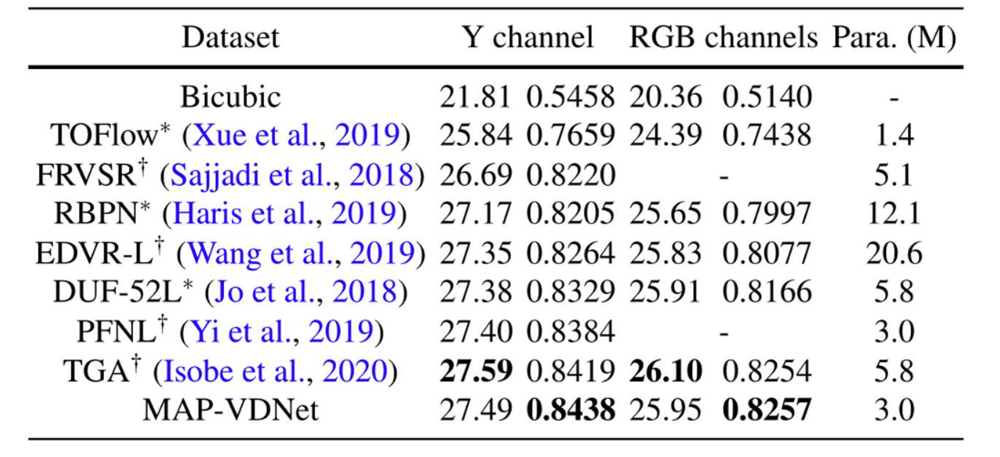
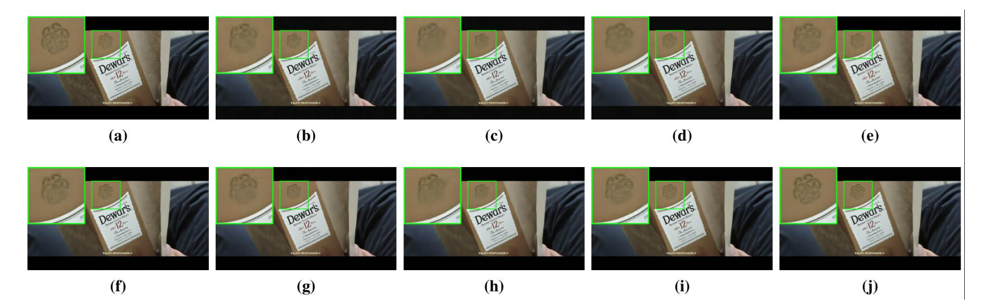
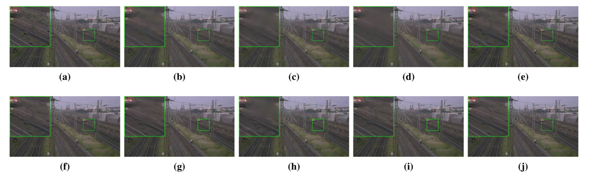
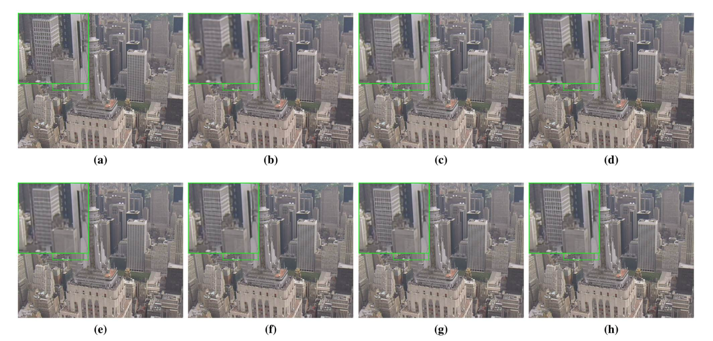

Abstract
Unlike the maturity of image denoising research, video denoising has remained a challenging problem. A fundamental issue at the core of the video denoising (VD) problem is how to efficiently remove noise by exploiting temporal redundancy in video frames in a principled manner. Based on the Maximum a Posterior (MAP) estimation framework and recent advances in deep learning, we present a novel deep MAP-based video denoising method named MAP-VDNet with adaptive temporal fusion and deep image prior. The proposed MAP-based VD algorithm allows computationally efficient untangling of motion estimation (frame alignment) and image restoration (denoising). To address the misalignment issue, we also present a robust multi-frame fusion strategy for predicting spatially varying fusion weights by a neural network. To facilitate end-to-end optimization, we unfold the proposed iterative MAP-based VD algorithm into a deep convolutional network named MAP-VDNet. Extensive experimental results on three popular video datasets have shown that the proposed MAP-VDNet significantly outperforms current state-of-the-art VD techniques such as ViDeNN and FastDVDnet.
Paper & Code & Demo
Experimental Results
Table 1. The average PSNR/SSIM video denoising results on Vimeo, ASU, and DTMC-HD dataset at different noise levels (boldface highlights the best).
Table 2. The average PSNR/SSIM super-resolution results on Vid4 test set for ×4 video super-resolution (boldface highlights the best.) † denotes the results from their publications, and ∗ denotes the results from TGA [13].
Result Visualization
-

Figure 2. Denoising results for a noisy frame from Vimeo test set with noise level 25. (a) Original frame; denoised frame by (b) V-BM4D [1] (31.66 dB, 0.7169), (c) RTA-LSM [2] (32.27 dB, 0.7429), (d) VNLB [3] (32.27 dB, 0.7427), (e) TOFlow [4] (35.13 dB, 0.8925), (f) TOFlow-EN (36.75dB, 0.9484), (g) ViDeNN [5] (37.65 dB, 0.9533), (h) VNLnet [6] (36.63 dB, 0.9462), (i) FastDVDnet [7] (37.25 dB, 0.9546), and (j) MAP-VDNet (39.30 dB, 0.9627).
Figure 3. Denoising results for a noisy frame of Station video of DTMC-HD test set with noise level 50. (a) Original frame; denoised frame by (b) V-BM4D [1] (30.74 dB, 0.7445), (c) RTA-LSM [2] (30.63 dB, 0.7682), (d) VNLB [3] (31.78 dB, 0.8020), (e) TOFlow [4] (31.99 dB, 0.8029), (f) TOFlow-EN (32.99 dB, 0.8391), (g) ViDeNN [5] (32.72 dB, 0.8274), (h) VNLnet [6] (30.79 dB, 0.7759), (i) FastDVDnet [7] (33.25 dB, 0.8497), and (j) MAP-VDNet (33.82 dB, 0.8608).
Figure 4. Video superresolution results (×4 up-sampling) for a low-resolution frame of City video of Vid4 test set. (a) Original frame; superresolved frame by (b) TOFlow [4] (25.40 dB, 0.7081), (c) FRVSR [8] (26.78 dB, 0.8136), (d) RBPN [9] (26.51 dB, 0.7929), (e) EDVR-L [10] (26.86 dB, 0.7995), (f) DUF-52L [11] (26.89 dB, 0.8147), (g) PFNL [12] (26.94 dB, 0.8298), (h) MAP-VDNet (27.28 dB, 0.8369).
Citation
@article{sun2021deep,
title={Deep Maximum a Posterior Estimator for Video Denoising},
author={Sun, Lu and Dong, Weisheng and Li, Xin and Wu, Jinjian and Li, Leida and Shi, Guangming},
booktitle={International Journal of Computer Vision },
year={2021}
}
Concat
Lu Sun, Email: sunlu@stu.xidian.edu.cn
Weisheng Dong, Email: wsdong@mail.xidian.edu.cn
Xin Li, Email: xin.li@mail.wvu.edu
Leida Li, Email: ldli@xidian.edu.cn
Jinjian Wu, Email: jinjian.wu@mail.xidian.edu.cn
Guangming Shi, Email: gmshi@xidian.edu.cn